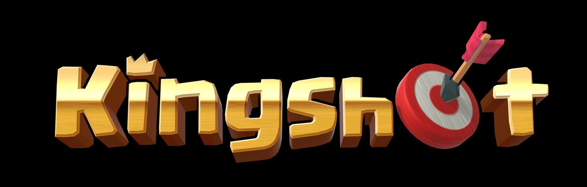

T-3:00
Invasion phase
- If you are staying for the castle, stay out of fights.
- Snipe anyone unreinforced, then move straight away so you do not get caught.

Battle PlanOccupation time is counted per alliance and it adds up over the whole five hours, so short holds still count.
If you only read one part of this page, read this bit. Everything after it is detail.
If three of our alliances hold it for 70, 60 and 50 minutes, we still lose to one alliance that held it for 75. So WPK will be the one sitting in the castle, and everyone else supports that.
Losses at the castle and turrets go to your infirmary. Attacking someone's base kills about 35% of your own casualties permanently, which is why we would rather they came at us.
Field Triage gives most of it back after the battle, so there is no need to hold troops back.
Once it is full, roughly 30% of anything after that dies permanently. Heal in small batches the whole way through. Set the slider to around 30 minutes, hit heal, ask for alliance help, and repeat. Save your speedups for when you are actually close to filling up.
If you are not sure which one you are, please ask before the window opens.
| You are | You do |
|---|---|
| Rally lead | Launch on the castle when called. A WPK rally should be the one that finishes it. |
| Garrison | Sit in the castle or on a turret and stay there. You are not there to get kills. |
| Joiner | Join with your assigned hero in slot 1. See T05 for which one that is. |
| Alt or farm | Take tiles near the castle, act as bait, and call out anything you see. |
| Cannot attend | Skip the castle and go invade instead, do as much damage as you can. |
Everyone gets up to 90% of their troops back afterwards, so if there is someone you can kill near the castle, or someone marching in from a long way out, go and take them. Just be ready to move straight after, or keep a random teleport handy to get out of trouble. And if you spot an opening, say so in chat. Communication is going to matter as much as anything else on the day.
WPK and KVK are the two alliances for castle battle. Anyone active who reads chat should be in one of them. Please move non readers and inactive accounts to another alliance before the window opens.
| Player | Alliance | Job |
|---|---|---|
| Maven | WPK | Rally lead, then garrisons the castle once we are in |
| Spartan | WPK | Rally lead |
| Whispering | WPK | Rally lead |
| FTH | WPK | Rally lead |
| Tex | KVKFlex | Rally lead, moves between the two alliances as needed |
| BaldKi | KVKFlex | Rally lead, moves between the two alliances as needed |
| Teehee | KVK | Rally lead |
| DrL | KVK | Rally lead |
| Mons | KVK | Rally lead |
The KVK leads are mainly there for when we cannot shift their whale out of the castle any other way, so we double rally them out. Bigger players should be ready to switch alliance if we call for it, and please say yes quickly, because a swap that lands after the rally is no use. If you are one of the two flexing across, do not switch while you have a march sitting in a rally or garrisoned somewhere, because we do not know yet what that does to the march or to the occupation clock.
You will lose troops for nothing and turn up wounded. Come in with an empty infirmary instead.
Set the castle open time once and every phase switches to your own clock.
They are not there to protect whoever is inside, which is why we want them before we go for the castle.
| Turrets held | What our castle squads get |
|---|---|
| 1 | +8% lethalityBarely started. |
| 2 | +12%They are starting to lose troops. |
| 3 | +15%Good point to rally the castle. |
| 4 | +20%They will not hold, go and take it. |
A turret starts slow and speeds up to around a shot a minute, taking about 2% of the castle garrison each time. The cheapest thing they can do is send a throwaway march to flip one and reset its clock, so holding the turrets we already have matters more than grabbing extra ones. Keep four people parked next to their turret ready to take it back.
Maven will be holding the castle. This is what everyone else does to make that hold stick.
The game gives the whole garrison its defence bonuses from one player, whichever one has the highest stats. If someone built for attack wanders in, they can take that spot from Maven and make everyone in there worse without anyone noticing. If you are not on the list, reinforce a turret instead.
Infantry, cavalry, archers. Do not drop any of them to zero or you waste that type's hero skills.
Save both of these before battle day so nobody is dragging sliders around mid rally.
When you join, only the first skill on your slot 1 hero counts, and only four joiners count at all. Four of the same hero just add together, but four different ones multiply, which works out to roughly 12% more damage for nothing. Find your group below and set that hero.
| Group | Slot 1 hero | Send on |
|---|---|---|
| A | Chenko | Attack rallies |
| B | Amane | Attack rallies |
| C | Saul | Garrison, the best single defensive joiner we have |
| D | Hilde | Either |
| E | Fahd | Garrison |
The garrison stack we want is Saul, Hilde, Chenko, Chenko. Your skill needs to be maxed or you get skipped. Gear on a joiner does nothing at all, so do not sit out a rally because you think your gear is bad.
A few things in the original plan turned out to work differently than we thought.
A rally locks the people who joined it, and the defender can pull their garrison march out any time they want. So a fake rally ends up tying up our own people more than theirs. Use throwaway accounts for these.
Bases do not slow enemy marches down, only the relic does that. They do take up tiles though, so filling the ground near the castle still forces them to land further away.
If the castle goes to whichever alliance won the rally, then a KVK rally taking it puts the time on KVK instead of WPK and splits our total in half. So KVK softens them up and WPK finishes it. Worth testing on a turret early on to see how it actually behaves.